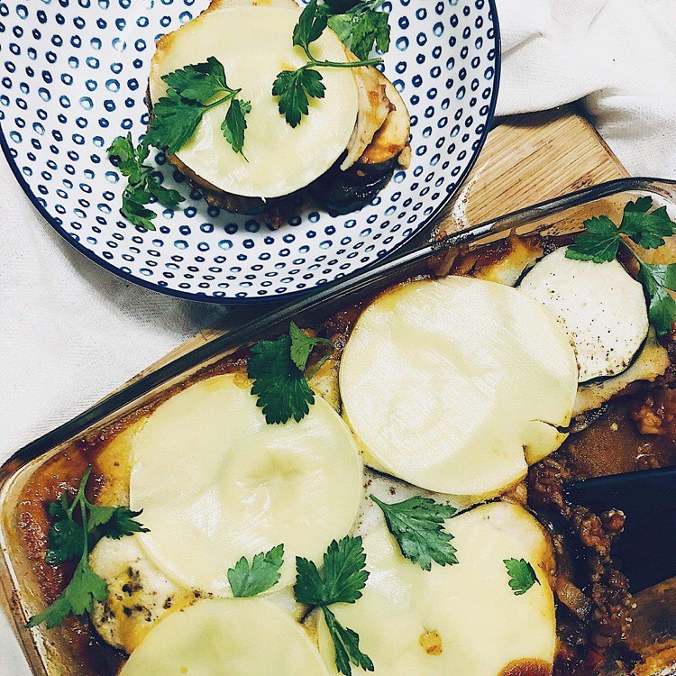

Grécka musaka podľa @ro_slinka_cieknie — Normy Jedál
•🍆Grecka Musaka 🍆 •
Chcecie poczuć trochę greckiego klimatu ? Robiąc to z musaką na pewno nie będziecie żałować.
Next level mielone, to nowy wegański substytut mięsa mielonego, zrobiony z białka soi i pszenicy. Możecie go znaleźć głównie w @lidlpolska , ale też i innych sieciówkach. Ma dobry skład i na prawdę smakuje wyśmienicie 🥰 Lecz jeżeli nie jesteście przekonani możecie zastąpić wędzonym tofu.
Czego potrzebujemy ?
-bakłażan - 2 sztuki
-cebula - 1 sztuka
-czosnek - 2 ząbki
-„next level mielone” - 275g
(można zastąpić tofu wędzonym - 2 kostki)
-pomidory w puszce - 1 puszka
-wino czerwone wytrawne - 0,5 szklanki
-natka pietruszki - natka
-sól, pieprz,chilli, cynamon, oregano, cukier - 0,5 łyżeczki,
-ser żółty wegański - 6 plasterków
Sos beszamelowy :
-oliwa z oliwek - 3 łyżki
-mąka - 3 łyżki
-mleko roślinne - 0,5 szklanki
-gałka muszkatołowa - 0,5 łyżeczki
1.Cebulę podsmażamy na patelni z czosnkiem. Dodajemy „mięso mielone” bądź rozdrabniamy tofu. Dodajemy wszystkie przyprawy, pokrojoną natkę pietruszki, mieszamy i podsmażamy ok.10 min.
2.Dolewamy wino i dusimy do momentu jego wyparowania, następnie dodajemy pomidory z puszki i dusimy jeszcze przez ok. 10 min.
3.Bakłażana kroimy w plastry ok.3 cm i wykładamy nim dno naczynia żaroodpornego. Następnie na bakłażana dodajemy połowę farszu, przekładamy kolejną porcją bakłażana i znowu farsz, a na sam wierzch ostania warstwa bakłażana.
4.Sos beszamelowy : w garnku rozgrzewamy oliwę, dodajemy mąkę, mieszamy a następnie powoli dolewamy mleko i mieszamy aż sos zgęstnieje, na koniec dodajemy gałkę muszkatowołaą i sól do smaku.
5. Zalewamy musakę sosem, dodajemy ser i pieczemy w piekarniku przez 30 min w 180 stopniach.
#wegan #wegańskie #polishgirls #roslinkacieknie #roślinkacieknie #weganskieprzepisy #wegańskieprzepisy #vegan #veganrecipes #przepisy #przepisykulinarne #weganizujemypolskę #wege #weganka #cojedzaweganie #cojedzapolscyweganie #veganfood #lactosefree #eggfree #musaka #bakłażan #greckamusaka #nextlevel #lidl #roslinniejemy #przyszloscjestroslinna #baklazan ##przepisnabaklazana #pysznyprzepis